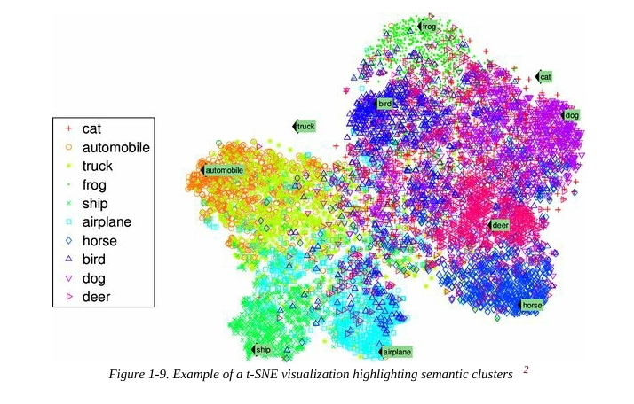

Unit 1 - AML
| AML |
1. Introduction
What is Machine Learning ?
→ Machine Learning is the science (art of) programming computers so they can learn from data.
- General definition :
Machine learning is the field of study that give computers the ability to learn without being explicitly programmed.
- Engineering-oriented definition :
A computer program is said to learn from experience E with respect to some task T and some performance measure P, if its performance on T, as measured by P, improves with experience E.
Example:
The spam filter is a machine learning program that can learn to flag spam given examples of spam emails. (e.g. flagged by users) and examples of regular (non-spam, also called as “ham”) emails. The examples that the system uses to learn are called training set. Each training example is called a training instance.
In this case, the task T is to flag spam for new emails, the experience E is the training data, and the performance measure P needs to be defined; for example, you can use the ratio of correctly classified emails. This particular performance measure is called accuracy and it is often used in the classification task.
Why to use machine learning ?
→
- Automation of Decision Making: ML automates the tasks that would be hard to program manually, like recognizing faces or translating languages.
- Handling Complex Data: ML can handle huge amounts of data and extract meaningful patterns.
- Adaptability: ML models improves with more data and can adapt to new patterns.
- Performance: In many tasks (like image recognition), ML models performs better than traditional algorithms.
Applying ML techniques to dig into large amounts of data can help discover patterns that were not immediately apparent. This is called data mining.
When to use machine learning ?
→
- There is a large amount of data.
- The problem is too complex to manually define rules.
- You want the system to improve overtime.
- examples:
- Spam email detection.
- Recommendation Systems (e.g.Netflix)
- Autonomous driving (real-time object recognition and decision making).
2. Learning Paradigms
There are so many different types of ML systems that it is useful to classify them in broad categories based on:
- Whether or not they are trained with human supervision (supervised, unsupervised, semisupervised, and reinforcement learning,)
- Whether or not they can learn incrementally on the fly (online vs batch learning).
- Whether they work by simply comparing new data points to know data points, or instead detect patterns in the training data and build a predictive model, much like scientists do (instance-based vs model-based learning).
These criteria are not exclusive; we can combine them in any way we like. For example, a state-of-the-art spam filter may learn on the fly using a deep neural network model trained using examples of spam and ham; this makes it an online, model-based, supervised learning system.
Supervised / Unsupervised Learning
Machine learning systems can be classified according to the amount and type of supervision they get during training. There are four major categories. Supervised, unsupervised, semi-supervised, and reinforcement learning.
Supervised Learning
In Supervised Learning the training data you feed to the algorithm includes the desired solutions, called labels. The model is trained on labelled data (input-output pairs). The goal is to learn mapping from input to output.
{kind=link}
A typical supervised learning task is called classification. The spam filter is a good example of this; it is trained with many example emails along with their class (spam or ham) and it must learn how to classify new emails.
Another typical task is to predict a target numeric value, such as price of a car. given a set of features (milage, age, brand, etc.) called predictors. This sort of task is called as Regression. To train system. you need to give it many examples of cars, including both predictors and their labels (i.e. their prices.)
In machine learning an attribute is a data type (e.g. “Mileage”). while a feature has several meanings depending on the context, but generally means an attribute plus its value (e.g. “Mileage = 15,000”).
{kind=link}
Some regression algorithms can be used for classification as well, and vice versa. For example. Logistic Regression is commonly used for classification, as it can output a value that corresponds to the probability of belonging to a given class (e.g. 20% chance of being spam).
Important supervised learning algorithms:
- K-Nearest Neighbors
- Linear Regression
- Logistic Regression
- Support Vector Machines (SVMs)
- Decision Trees and Random Forests
- Neural Networks
Unsupervised Learning
In Unsupervised Learning the training data is unlabeled. The model tries to find patterns in data. For example: Clustering customers by purchase behavior.
{kind=link}
Important supervised learning algorithms:
- Clustering Algorithms -
- k-Means clustering
- Hierarchical Cluster Analysis (HCA)
- Expectation Maximization
- Visualization and Dimensionality Reduction -
- Principal Component Analysis (PCA)
- Kernel PCA
- Locally-Linear Embedding (LLE)
- t-distributed Stochastic Neighbor Embedding (t-SNE)
- Association Rule Learning -
- Apriori
- Eclat
For example, lets say you have a lot of data about your blog’s visitors. You may want to run a Clustering algorithm to try to detect group of similar visitors. At no point we tell the algorithm which group of visitors belongs to: it finds those connections without your help. For example, it might notice that 40% of your visitors are teenagers who love comic books and generally read your blog after school, while 20% are adults who enjoy sci-fi and who visit during the weekends. If you use a Hierarchical Clustering Algorithm, it may also subdivide each group into smaller groups. This may help you target your posts for each group.
{kind=link}
Visualization Algorithms are also good examples of unsupervised learning algorithms you feed them a lot of complex and unlabeled data, and they output a 2D or 3D representation of your data that can easily be plotted. These algorithms try to preserve as much structure as they can (e.g. trying to keep separate clusters in the input space from overlapping in the visualization), so you can understand how the data is organized and perhaps identify unsuspected patterns.
.jpeg){kind=link}

A related task is Dimensionality Reduction, in which the goal is to simplify the data without loosing too much information. One way to do this is to merge several correlated features into one. For example, a car’s mileage maybe correlated with its age, so the dimensionality reduction algorithms will merge them into one feature that represents the car’s wear and tear. This is called feature extraction.
Another important unsupervised task is Anomaly Detection, for example, detecting unusual credit card transactions to prevent fraud, catching manufacturing defects, or automatically removing outliers from a dataset before feeding it to another learning algorithm. The system is trained with normal instances, and when it sees a new instance it can tell whether it looks like a normal one or whether it is likely an anomaly.
{kind=link}
Finally, another common unsupervised task is Association rule learning, in which the goal is to dig into large amounts of data and discover interesting relations between attributes. For example, suppose you own a supermarket. Running an association rule on your sales log may reveal that people who purchase Bread and Butter also tend to buy Eggs. Thus, you may want to place these items close to each other.
Semisupervised Learning
Some algorithms are can deal with partially labeled training data, usually a lot of unlabeled data and a little it of labeled data. This is called semisupervised learning.
{kind=link}
Some photo-hosting services, such as Google Photos, are good examples of this. Once you upload all your family photos to the service, it will automatically recognize that the same person A shows up in photos 1,5, and 11, while another person B show up in photos 2,5, and 7. This is unsupervised part of the algorithm (clustering). Now all the system needs is for you to tell it who these these people are. Just one label per person and it is able to name everyone in every photo, which is useful for searching photos.
Most semisupervised learning algorithms are combinations of unsupervised and supervised algorithms. For example, deep belief networks (DBNs) are based on unsupervised components called restricted Boltzmann machines (RBMs) stacked on top of one another. RBMs are trained sequentially in an unsupervised manner, and then the whole system is fined-tuned using supervised learning techniques.
Reinforcement Learning
Reinforcement learning is a very different beast. The learning system, called an agent in this context, can observe the environment, select and perform actions, and get rewards in return ( or penalties in the form of negative rewards). It must then learn by itself what is the best strategy, called a policy, to get the most reward over time. A policy defines what action the agent should choose when it is in a given situation.
{kind=link}
For example, many robots implement Reinforcement learning algorithms to learn how to walk. DeepMind’s AlphaGo program is also a good example of Reinforcement Learning: it made the headlines in March 2016 when it beat world champion Lee Sedol at the game of Go. It learned its winning policy by analyzing millions of games, and then playing games against itself. Note that learning was turned off during the games against the champion; AlphaGo was just applying the policy it had learned.
3. Main Challenges of Machine Learning
Main task is to select a learning algorithm and train it on some data, the two things that can go wrong are “bad algorithm” and “bad data”.
Insufficient Quantity of Training Data
For a toddler to learn what an apple is, all it takes is for you to point to an apple and say “apple” (possibly repeating this procedure a few times). Now the child is able to recognize apples in all sorts of colors and shapes.
Machine Learning is not quite there yet; it takes a lot of data for most Machine Learning algorithms to work properly. Even for very simple problems you typically need thousands of examples, and for very simple problems you typically need thousand of examples, and for complex problems such as image or speech recognition you need millions of examples (unless you can reuse parts of an existing model).
The Unreasonable Effectiveness of Data
In a famous paper published in 2001, Microsoft researchers Michele Banko and Eric Brill showed that very different Machine Learning algorithms, including fairly simple ones, performed, almost identically well on a complex problem of natural language disambiguation once they were given enough data.
{kind=link}
As the authors put it: “these results suggest that we may want to reconsider the tradeoff between spending time and money on algorithm development verses spending it on corpus development”.
The idea that data matters more than algorithms for complex problems was further popularized by Peter Norvig et al. in a research paper titled “The Unreasonable Effectiveness of Data” published in 2009. It should be noted, however, that small- and medium- sized datasets are still very common, and it is not always easy or cheap to get extra training data, so don’t abandon algorithms just yet.
Nonrepresentative Training Data
In order to generalize well, it is crucial that your training data be representative of the new cases you want to generalize to. This is true whether you use instance-based learning or model-based learning.
For example, the set of countries you used earlier for training the linear model was not perfectly representative; it did not contain any country with a GDP per capita lower than $23,500 or higher than $62,500. Figure 1-22 shows what the data looks like when you add such countries.
If you train a linear model on this data, you get the solid line, while the old model is represented by the dotted line. As you can see, not only does adding a few missing countries significantly alter the model, but it makes it clear that such a simple linear model is probably never going to work well. It seems that very rich countries are not happier than moderately rich countries (in fact, they seem slightly unhappier!), and conversely some poor countries seem happier than many rich countries.
By using a nonrepresentative training set, you trained a model that is unlikely to make accurate predictions, especially for very poor and very rich countries.
{kind=link}
It is crucial to use a training set that is representative of the cases you want to generalize to. This is often harder than it sounds:
if the sample is too small, you will have sampling noise (i.e., nonrepresentative data as a result of chance), but even very large samples can be nonrepresentative if the sampling method is flawed. This is called sampling bias.
EXAMPLES OF SAMPLING BIAS
Perhaps the most famous example of sampling bias happened during the US presidential election in 1936, which pitted Landon against Roosevelt: the Literary Digest conducted a very large poll, sending mail to about 10 million people. It got 2.4 million answers, and predicted with high confidence that Landon would get 57% of the votes. Instead, Roosevelt won with 62% of the votes.
- The flaw was in the Literary Digest’s sampling method:
First, to obtain the addresses to send the polls to, the Literary Digest
used telephone directories, lists of magazine subscribers, club
membership lists, and the like. All of these lists tended to favor
wealthier people, who were more likely to vote Republican (hence
Landon).
- Second, less than 25% of the people who were polled answered.
Again this introduced a sampling bias, by potentially ruling out
people who didn’t care much about politics, people who didn’t like
the Literary Digest, and other key groups. This is a special type of
sampling bias called nonresponse bias.
Here is another example: say you want to build a system to recognize
funk music videos. One way to build your training set is to search for
“funk music” on YouTube and use the resulting videos. But this assumes
that YouTube’s search engine returns a set of videos that are
representative of all the funk music videos on YouTube. In reality, the
search results are likely to be biased toward popular artists (and if you
live in Brazil you will get a lot of “funk carioca” videos, which sound
nothing like James Brown). On the other hand, how else can you get a
large training set?
Poor Quality Data
If your training data is full of errors, outliers, and noise (.g. due to poor-quality measurements), it will make it harder for the system to detect the underlying patterns, so your system is likely to perform well. It is often well worth the effort to spend time cleaning up your training data. The truth is, most data scientists spend a significant part of their time doing just that. For example:
- If some instances are clearly outliers, it may help to simply discard them or try to fix the errors manually.
- If some instances are missing a few features (e.g. 5% of your customers did not specify their age), you must decide whether you want to ignore the attributes altogether, ignore these instances. fill in the missing values (e.g. with the median age), or train one model with the feature and one model without it, and so on.
Irrelevant Features
As the saying goes: garbage in, garbage out. Your system will only be capable of learning if the training data contains enough relevant features and not too many irrelevant ones. A critical part of the success of a Machine Learning project is coming up with a good set of features to train on. This process is called feature engineering, involves:
- Feature Selection: selecting the most useful feature to train on among existing features.
- Feature Extraction: combining existing features to produce a more useful one (as we saw earlier, dimensionality reduction algorithms reduction algorithms can help).
- Creating a new features by gathering new data.
Now that we have a looked at the examples of bad data. Let’s look at a couple of examples of bad algorithms.
Overfitting the Training Data
Say you are visiting a foreign country and the taxi driver rips you off. You might be tempted to say that all taxi drives in that country are thieves. Overgeneralization is something that we humans do all too often, and unfortunately machines can fall into the same trap if we are not careful.
In Machine Learning this is called overfitting: it means that the model performs well on the training data, but it does not generalize well.
The figure below shows an example of high-degree polynomial life satisfaction model that strongly overfits the training data. Even though it performs much better on the training data than the simple linear model, would you really trust its predictions ?
{kind=link}
Complex models such as deep neural networks can detect subtle patterns in the data, but if the training set is noisy, or if it is too small (which introduces sampling noise), then the model is likely to detect patterns in the the noise itself. Obviously these patterns will not generalize to new instances.
For example, say you feed your life satisfaction model many more attributes, including uninformative ones such as the country’s name. In that case, a complex model may detect patterns like the fact that all countries in training data a, w in their names have life satisfaction greater than 7: New Zealand (7,3), Norway(7,4), Sweden(7,2), and Switzerland(7,5). How confident are you that the W-satisfaction rule generalizes to Rwanda or Zimbabwe? Obviously this pattern occurred in the training data by pure chance, but the model has no way to tell whether a pattern is real or simple the result of noise in the data.
Overfitting happens when the model is too complex relative to the amount and noisiness of the training data. The possible solutions are:
- To simplify the model by selecting one with fewer parameters (e.g., a linear model rather than a high-degree polynomial model), by reducing the number of attributes in the training data or by constraining the model.
- To gather more training data.
- To reduce the noise in the training data (e.g., fix data errors and remove outliers).
Regularization
Containing a model to make it simpler and reduce the risk of overfitting is called Regularization. For example, the linear model we defined earlier has two parameters, θ0 and θ1. This gives the learning algorithm two degrees of freedom to adapt the model to the training data: it can tweak both the height (θ0) and the slope (θ1) of the line. If we forced θ1 = 0, the algorithm would have only one degree of freedom and would have a much harder time fitting the data properly: all it could is move the line up or down to get as close as possible to training instances, so it would end up around the mean. A very simple model indeed! If we allow the algorithm will effectively have somewhere in between one and two degrees of freedom. It will produce a simpler model than with two degrees of freedom, but more complex than with just one. You want to find the right balance between fitting the data perfectly and keeping the model simple enough to ensure that it will generalize well.
Version Spaces
Hypothesis Space (H)
The hypothesis space is the set of all hypotheses that a learning algorithm can possibly choose from, based on its representation. A hypothesis is a possible explanation for the target function you’re trying to learn.
- Formal Definition:
- If X is the set of instances (input data points), and each hypothesis is a function h:x→{0,1}, then the hypothesis space H is the set of all such functions that the learning algorithm considers.
example:
If your instances are descriptions of animals, a hypothesis might be:
IF animal has feathers AND lays eggs THEN animal is a bird.
Finite Hypothesis Space:
- The number of hypothesis in H is finite.
- example:
If you have 3 binary features (e.g., color, size, weight), and you’re using conjunctions of feature values, you may only have a small, countable number of hypotheses.
- Importance: Finite space allow for exhaustive enumeration, easier analysis, and are computationally tractable.
Infinite Hypothesis Space:
- The number of hypothesis in H is infinite.
- Can be countably infinite, example: All integer linear classifier, or uncountably infinite eg. all possible real-valued weights in neural networks.
- Importance: Infinite hypothesis spaces are more expressive, but can lead to overfitting and require regularization/generalization techniques.
Version Spaces (VS)
The version space is the subset of the hypothesis space that is consistent with the training data.
- Definition:
- Given:
- Hypothesis space H
- Training data D = {(x1,y1),(x2,y2,)…..(xn,yn)}
The version space is
- Given:
Version Space Representation
In the Candidate Elimination Algorithm, The version space is represented using:
- S: The set of maximally specific hypotheses consistent with the data
- G: The set of maximally general hypotheses consistent with the data
- The version space is:
This representation allows you to avoid enumerating all hypotheses and instead maintain just the boundaries
Why version space matter
- Helps understand what the learner knows and what it still could be.
- Useful in active learning, where the learner can query new examples to eliminate portions of the version space.
- Gives insight into bias and expressiveness of the learning algorithm.
Summary Table of Version space:
| Concept | Description |
| Hypothesis Space (H) | All possible hypotheses a learner can choose from |
| Finite H | A limited number of hypotheses (e.g., all boolean function over 3 features) |
| Infinite H | Infinite number of hypotheses (e.g., all linear classifiers) |
| Version Space (VS) | Subset of H consistent with observed training data |
| S boundary | Most specific consistent hypotheses |
| G boundary | Most general consistent hypotheses |